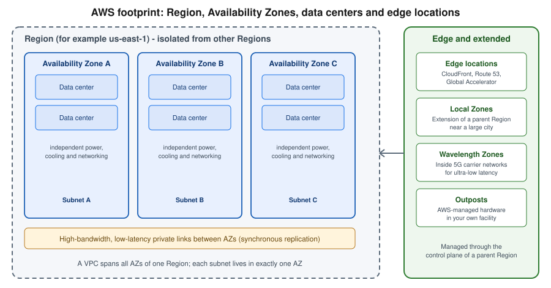

AWS Global Infrastructure
|
This content was generated with the assistance of AI and should be verified against the official documentation before being relied on in production. |
Examples on this page target AWS CLI v2 (the 2.37 line, checked 2026-10-01) and use us-east-1 as a placeholder
Region. As of the checks made for this page (2026-10-01), the AWS global infrastructure site reports 39 geographic
Regions and 124 Availability Zones in total, 750+ CloudFront points of presence, 46 Local Zones and 33 Wavelength
Zones, with two more Regions announced for Saudi Arabia and Chile. Those figures change several times a year, so
treat them as a dated snapshot and read the live numbers on the
AWS global infrastructure site. The 39 Regions are the
34 Regions available to a standard AWS account plus the two AWS GovCloud (US) Regions, the two China Regions and the
first AWS European Sovereign Cloud Region.
AWS' physical footprint is a hierarchy: Regions contain Availability Zones (AZs), and AZs contain one or more data centers. Around that core sit extensions that bring AWS closer to users or into your own facility (Local Zones, Wavelength Zones, Outposts) and a worldwide edge network used by a handful of global services. Where a workload lands in this hierarchy drives resilience, latency, compliance and cost, which is why nearly every later page of this section starts by saying which Region it assumes. For the vocabulary behind these terms see Cloud concepts, and for credentials and the default Region of your CLI profile see Getting started.

Regions
A Region is a separate geographic area, identified by a code such as us-east-1 (N. Virginia), eu-west-1
(Ireland) or ap-southeast-2 (Sydney). Each Region is completely independent of the others: its own control plane,
its own service endpoints (ec2.us-east-1.amazonaws.com) and its own set of resources. A resource created in one
Region is invisible in another, and data never leaves a Region unless you configure replication or copy it
yourself. That isolation limits the blast radius of a failure and is the basis of AWS' data-residency commitments:
content stays in the Region you pick unless you move it.
Almost every resource in this section is regional: a VPC, an ECS cluster, a Lambda function, an RDS instance or an SQS queue exists in exactly one Region. The most common beginner error is looking at the right account in the wrong Region and concluding that a resource has vanished.
In the AWS Management Console
-
Sign in to the AWS Management Console.
-
In the top navigation bar, open the Region selector (it shows the current Region name, for example N. Virginia).
-
Pick another Region. Every regional console then shows only the resources of that Region.
-
To see every Region, its opt-in status and its zones in one place, open AWS Global View (search for "Global View") and choose Regions and Zones.
-
In AWS CloudShell the session starts in the Region currently selected in the console, so change the selector before opening the shell.
With the AWS CLI
# Regions enabled for this account (opt-in Regions you have not enabled are excluded)
aws ec2 describe-regions --output table
# Include Regions that are not enabled yet, and show the opt-in status
aws ec2 describe-regions --all-regions \
--query "Regions[].{Region:RegionName,Status:OptInStatus}" --output table
# Only the Region codes, as plain text
aws ec2 describe-regions --query "Regions[].RegionName" --output text
# Which Region is the CLI using, and set another one for the current profile
aws configure get region
aws configure set region eu-west-1Availability Zones
An Availability Zone is one or more discrete data centers inside a Region, with redundant power, networking and
connectivity, housed in separate facilities. A Region has at least three AZs (a few have more; for example
us-east-1 has six), and AZs in a Region are connected by high-bandwidth, low-latency private fiber that is fast
enough for synchronous replication. They are physically separated by a meaningful distance so a fire, flood or
power failure in one is unlikely to affect another, yet close enough that an application can span them without
noticeable latency.
AZs are how you build high availability on AWS. A subnet lives in exactly one AZ, a VPC spans every AZ of its Region, and multi-AZ services (an Application Load Balancer, an Auto Scaling group, RDS Multi-AZ, Aurora, an ECS service) spread capacity across the subnets you give them. Designing for one AZ failing is the baseline expectation; designing for a whole Region failing is a separate, more expensive decision covered in Architecture, migration and hybrid.
Zone names versus zone IDs. The name us-east-1a in your account is mapped to a physical zone independently of
the same name in another account, so that load does not concentrate on "a". When two accounts must agree on the same
physical zone (for example when sharing subnets or a VPC endpoint service), compare the zone ID
(use1-az1), which is the same for everyone.
In the AWS Management Console
-
Open VPC → Subnets → Create subnet and open the Availability Zone dropdown to see the zones of the current Region.
-
In EC2 → Instances → Launch instances, the Network settings step shows the subnet and therefore the AZ an instance lands in.
-
Open AWS Global View → Regions and Zones and expand a Region to see its zone names and zone IDs.
With the AWS CLI
# Zones of the current Region, with name, ID and state
aws ec2 describe-availability-zones \
--query "AvailabilityZones[].{Name:ZoneName,Id:ZoneId,State:State}" --output table
# Zones of another Region
aws ec2 describe-availability-zones --region eu-west-1 --output table
# Include Local Zones and Wavelength Zones (groups that need opting in are listed too)
aws ec2 describe-availability-zones --all-availability-zones \
--query "AvailabilityZones[].{Name:ZoneName,Type:ZoneType,OptIn:OptInStatus}" --output table
# Spread a Bookshelf subnet pair across two specific zones
aws ec2 create-subnet --vpc-id "$VPC_ID" --cidr-block 10.0.1.0/24 --availability-zone us-east-1a
aws ec2 create-subnet --vpc-id "$VPC_ID" --cidr-block 10.0.2.0/24 --availability-zone us-east-1bSee AWS CLI Command Reference — aws ec2 describe-availability-zones and
AWS CLI Command Reference — aws ec2 create-subnet. Subnets and the rest of the network are covered in
VPC networking.
Opt-in Regions
Regions launched on or before 20 March 2019 are enabled by default in every account: the 17 Regions
us-east-1, us-east-2, us-west-1, us-west-2, ap-south-1, ap-northeast-1, ap-northeast-2,
ap-northeast-3, ap-southeast-1, ap-southeast-2, ca-central-1, eu-central-1, eu-west-1, eu-west-2,
eu-west-3, eu-north-1 and sa-east-1. Every Region introduced after that date is an opt-in Region, disabled
until you enable it for the account. At the time of writing this includes Cape Town (af-south-1), Hong Kong
(ap-east-1), Hyderabad, Jakarta, Malaysia, Melbourne, New Zealand, Taipei, Thailand, Calgary (ca-west-1),
Milan, Spain, Zurich, Tel Aviv (il-central-1), Mexico (mx-central-1), Bahrain and the UAE.
Enabling a Region distributes IAM resources (users, roles, groups) to it, which usually takes minutes but can take hours, and the Region cannot be used or disabled until that finishes. Enabling is free; you pay only for what you run. Disabling a Region removes access to it but does not delete resources already created there, so clean up first. Opt-in Regions also differ in practice: global service endpoints and some legacy STS tokens behave differently for them, and a few services or features arrive later than in older Regions. In an AWS Organization the management account (or a delegated administrator) can enable or disable Regions for member accounts, and a Service Control Policy can additionally deny actions in Regions you do not want used (see Accounts and Organizations).
In the AWS Management Console
-
Sign in as a user with account-management permissions (or as the root user).
-
Open AWS Global View → Regions and Zones → Regions, or open the account name menu → Account → AWS Regions.
-
The Status column shows Enabled by default, Enabled or Disabled. Select a disabled Region and choose Enable Region, then confirm.
-
Wait until the status changes to Enabled before selecting the Region in the Region selector.
With the AWS CLI
# Regions enabled by default
aws account list-regions --region-opt-status-contains ENABLED_BY_DEFAULT \
--query "Regions[].RegionName" --output text
# Regions that are enabled (by default or by you)
aws account list-regions --region-opt-status-contains ENABLED_BY_DEFAULT ENABLED \
--query "Regions[].RegionName" --output text
# Status of one opt-in Region
aws account get-region-opt-status --region-name af-south-1
# Enable it (asynchronous), then poll the status until it is ENABLED
aws account enable-region --region-name af-south-1
aws account get-region-opt-status --region-name af-south-1 --query RegionOptStatus --output text
# Disable it again
aws account disable-region --region-name af-south-1
# From the management account, act on a member account (placeholder ID)
aws account enable-region --region-name af-south-1 --account-id 111122223333Local Zones, Wavelength Zones and Outposts
Three offerings extend a Region towards where users or data actually are. All of them are managed through the control plane of a parent Region and appear in your account as extra zones of that Region.
- AWS Local Zones
-
An extension of a Region placed near a large population or industry center (for example Los Angeles, Boston or Buenos Aires), offering a subset of services such as EC2, EBS, ECS, EKS, VPC and load balancers for single-digit-millisecond latency to nearby users. A Local Zone has a zone group name (
us-west-2-lax-1) and must be opted in per account. Typical uses are media and entertainment workloads, real-time gaming and hybrid migrations that need to sit near on-premises systems. - AWS Wavelength Zones
-
AWS compute and storage embedded in telecommunications providers' 5G networks, so that mobile traffic reaches your application without leaving the carrier network. They also require opt-in and are suited to ultra-low-latency mobile applications such as game streaming or live video.
- AWS Outposts
-
AWS-designed racks and servers installed in your own data center or colocation space and operated by AWS as a logical extension of a Region, for workloads that need low latency to on-premises systems or local data processing and residency. Outposts is revisited as a hybrid option in Architecture, migration and hybrid.
Because each of these is a thin extension, only some services run in them, instance types and prices differ from the parent Region, and traffic back to the Region is billed as data transfer. Check service availability before designing around one.
In the AWS Management Console
-
In the account menu open Account → AWS Regions, or open EC2 → Settings → Zones.
-
Find the Local Zone or Wavelength Zone group (for example
us-west-2-lax-1) and choose Manage → Enabled → Update zone group. -
The new zone then appears in the Availability Zone dropdown of the subnet creation wizard of the parent Region.
With the AWS CLI
# List only Local Zones of a Region family, including those not yet opted in
aws ec2 describe-availability-zones --all-availability-zones \
--filters Name=zone-type,Values=local-zone \
--query "AvailabilityZones[].{Zone:ZoneName,Group:GroupName,OptIn:OptInStatus,Parent:ParentZoneName}" \
--output table
# Only Wavelength Zones
aws ec2 describe-availability-zones --all-availability-zones \
--filters Name=zone-type,Values=wavelength-zone --output table
# Opt in to a zone group
aws ec2 modify-availability-zone-group --group-name us-west-2-lax-1 --opt-in-status opted-inEdge locations
Edge locations (also called points of presence, or PoPs) are sites in many more cities than there are Regions. They terminate user connections close to the user and serve cached content or forward traffic over the AWS backbone instead of the public internet. They do not run your general compute: they host a specific set of global services, namely Amazon CloudFront (including CloudFront Functions and its regional edge caches), Amazon Route 53 DNS, AWS Global Accelerator, AWS WAF at the edge and AWS Shield. See Amazon CloudFront and Route 53 and certificates for how to use them. Edge locations are not a place you deploy to, so there is nothing to select in the console or CLI. Their locations and the regional edge caches are listed on the infrastructure site (see References).
Partitions
A partition is a group of Regions that share an ARN namespace, an IAM and billing system and a sign-in domain.
Most customers only ever use the standard partition, aws. Three other partitions are isolated from it: an
identity, IAM user or resource from one partition does not exist in another, and you cannot peer VPCs or assume
roles across partitions. The partition appears as the second field of every ARN
(arn:aws:s3:::bookshelf-uploads-111122223333 versus arn:aws-us-gov:s3:::…), so hard-coding arn:aws: in
policies or templates breaks them elsewhere; use the AWS::Partition pseudo parameter in CloudFormation or the
Partition helpers of the SDKs.
- AWS GovCloud (US) (
aws-us-gov) -
Regions
us-gov-west-1andus-gov-east-1, operated by U.S. persons for U.S. government agencies, contractors and regulated industries with workloads under frameworks such as FedRAMP High, ITAR and DoD requirements. Access requires a separate GovCloud account, which is created through a standard account that is linked to it for billing. - AWS China (
aws-cn) -
Regions Beijing (
cn-north-1) and Ningxia (cn-northwest-1), operated by local partners under Chinese law, with a separate sign-in portal, separate accounts, a different service catalog and endpoints underamazonaws.com.cn. An ordinary AWS account cannot see these Regions. - AWS European Sovereign Cloud (
aws-eusc) -
Generally available since 2026-01-14, with its first Region in Brandenburg, Germany (
eusc-de-east-1). It is physically and logically separate from the other partitions, operated by EU-resident personnel and EU-based legal entities, and meant for public-sector and regulated customers with strict EU data-sovereignty needs. Its service list is a subset of the standard partition and grows over time, so confirm each service before choosing it.
Treat a non-standard partition as a separate deployment target from day one: accounts, IAM, CLI profiles
(aws configure with the partition’s endpoints), AMIs, marketplace listings and some service features all differ.
Because identities are separate, plan their access with
Identity and access separately for each partition.
In the AWS Management Console
-
Each non-standard partition has its own sign-in page (for GovCloud and China, from the partition’s own site rather than
console.aws.amazon.com); signing in to the standard console never shows its Regions. -
After signing in, the Region selector lists only that partition’s Regions.
With the AWS CLI
# Show the partition and ARN of the current caller
aws sts get-caller-identity --query Arn --output text
# Use a GovCloud profile; Regions of another partition are only visible with its own credentials
aws ec2 describe-regions --profile govcloud --region us-gov-west-1 --output table
# List the partitions and Regions known to the installed CLI/SDK endpoint metadata
aws ssm get-parameters-by-path --path /aws/service/global-infrastructure/regions \
--query "Parameters[].Value" --output textSee AWS CLI Command Reference — aws sts get-caller-identity and
AWS Global Infrastructure Guide — AWS Regions. The partition-specific behavior is described in the
AWS GovCloud (US) User Guide and the
documentation for AWS China.
Choosing a Region
Selecting a Region is a trade-off across four criteria, and rarely does one Region win on all of them.
- Compliance and data residency
-
Laws, contracts or internal policy may restrict where data may be stored. Decide this first, because it removes Regions from the list. Regions in the standard partition do not move content out unless you copy or replicate it. Use the partition guidance above for sovereign requirements.
- Latency to users
-
Pick the Region closest to most of your users or to the systems you integrate with. For a global audience a single Region plus CloudFront for static and cacheable content is often enough; truly global low-latency writes require a multi-Region design.
- Service and feature availability
-
New services and features launch in a few Regions first, and opt-in Regions often get them later. Check the AWS Capabilities by Region tool (and the legacy AWS Services by Region list) before you commit, including instance types, because capacity and families differ between Regions.
- Price
-
The same resource costs differently per Region, driven by local energy, land and network costs. Compare using the AWS Pricing Calculator and the dated pricing pages of each service rather than relying on a remembered number; this page deliberately gives none. Cross-Region and cross-AZ data transfer is itself a cost driver.
Beyond those, us-east-1 is the oldest and largest Region and the place some global control planes live: IAM and
billing are global services, but CloudFront certificates from ACM must be requested in us-east-1, and a few
account-wide features are only configurable there. Treat it as a special case and avoid putting production
workloads there only because it is the default. Within a Region, spread subnets over at least two (preferably
three) AZs, and keep every resource of a request path in the same AZ where practical to reduce cross-AZ transfer
charges.
In the AWS Management Console
-
Open AWS Capabilities by Region (find it from the AWS Global Infrastructure Guide) to compare services, features, APIs and CloudFormation resources across Regions.
-
Open the AWS Pricing Calculator and add the same service in several Regions to compare estimates.
-
Create a trial resource, such as an empty bucket, in the shortlisted Regions and measure latency from your users' locations before deciding.
With the AWS CLI
# Is an instance type offered in a Region, and in which of its zones?
aws ec2 describe-instance-type-offerings --region eu-central-1 \
--location-type availability-zone \
--filters Name=instance-type,Values=m7g.large \
--query "InstanceTypeOfferings[].Location" --output text
# Is a service available in a Region? Public Systems Manager parameters list service endpoints
aws ssm get-parameters-by-path --region us-east-1 \
--path /aws/service/global-infrastructure/regions/eu-west-3/services \
--query "Parameters[].Name" --output text
# Long name of a Region from the same public parameters
aws ssm get-parameter --name /aws/service/global-infrastructure/regions/us-east-1/longName \
--query Parameter.Value --output textSee AWS CLI Command
Reference — aws ec2 describe-instance-type-offerings and
AWS
Systems Manager User Guide — Calling AWS-provided public parameters for AWS services, Regions, endpoints.
For the Bookshelf scenario used throughout this section, us-east-1 is a placeholder. A real deployment would
choose the Region closest to its readers (and to any data-residency rule), keep the stack in one Region for
simplicity and use CloudFront for the static front end.
Global, regional and zonal services
Knowing a service’s scope tells you where to look for it and how it fails.
| Scope | Meaning | Examples |
|---|---|---|
Global |
One control plane for the partition; resources are not tied to a Region you select (the console may show
"Global" or route through |
IAM, AWS Organizations, Route 53, CloudFront, AWS WAF (for CloudFront), AWS Global Accelerator, Billing and Cost Management. |
Regional |
Resources exist in one Region and are replicated across its AZs by the service. A Region outage is the failure domain. |
S3 buckets, DynamoDB tables, Lambda functions, SQS queues, ECS clusters, EKS clusters, VPCs, load balancers, Aurora and RDS clusters, KMS keys, Secrets Manager secrets. |
Zonal |
Resources live in a single AZ; high availability is your responsibility. |
EC2 instances, EBS volumes, subnets, NAT gateways (zonal unless the regional mode is used), ElastiCache nodes, single-AZ RDS instances. |
Pick the broadest scope that meets the availability goal: prefer regional or multi-AZ configurations over zonal ones, and keep zonal resources such as EBS volumes in the same AZ as the instances that use them. Services that can span Regions (S3 Cross-Region Replication, DynamoDB global tables, Aurora Global Database, KMS multi-Region keys, Route 53 failover) are opt-in features, not defaults.
Pricing and limits for this topic are mostly indirect: the infrastructure itself is free, but data transfer between AZs, between Regions and out to the internet is billed, public IPv4 addresses are charged per hour, and some Local Zone and Wavelength Zone resources cost more than the parent Region. Quotas (service quotas) are applied per Region, so a limit raised in one Region does not apply in another. Older guides still show only the original handful of Regions and describe every Region as enabled by default, which no longer holds; always check the opt-in status.
References
Related pages
-
Azure global infrastructure (the equivalent Azure page)